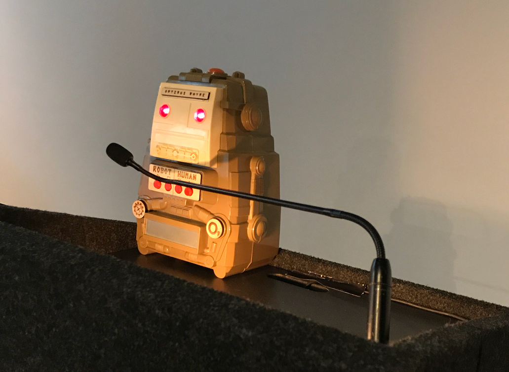

Collaborators:
- O, Miami Poetry Festival
- Project by Mario "The Maker" Cruz
- Moonlighter Makerspace
Credits:
- Videography by Jorge Graupera
- Editing by Melissa G. Gomez
- Song: Mystery Science Theater 3000 Theme Song
"Poetry Robots" are original machines designed by Mario Cruz to disseminate poems through technology.
The Poem-o-matic
The Poem-o-matic prints poems on receipt paper. Using a curated database of short poems, the Poem-o-matic prints one poem at a time, at random, with the touch of a button. Each poem tears away (just like a receipt) and can be taken home.
Optimus Rhyme
Optimus Rhyme is a robot who reads poems out loud on command. Once initiated, Optimus will read all of the poems in his hard drive in random order, over and over, until someone shuts him off. (Just like a real poet.)
These poetry robots represent the intersection of maker culture and the arts, using technology to bring poetry to unexpected places and audiences throughout Miami.